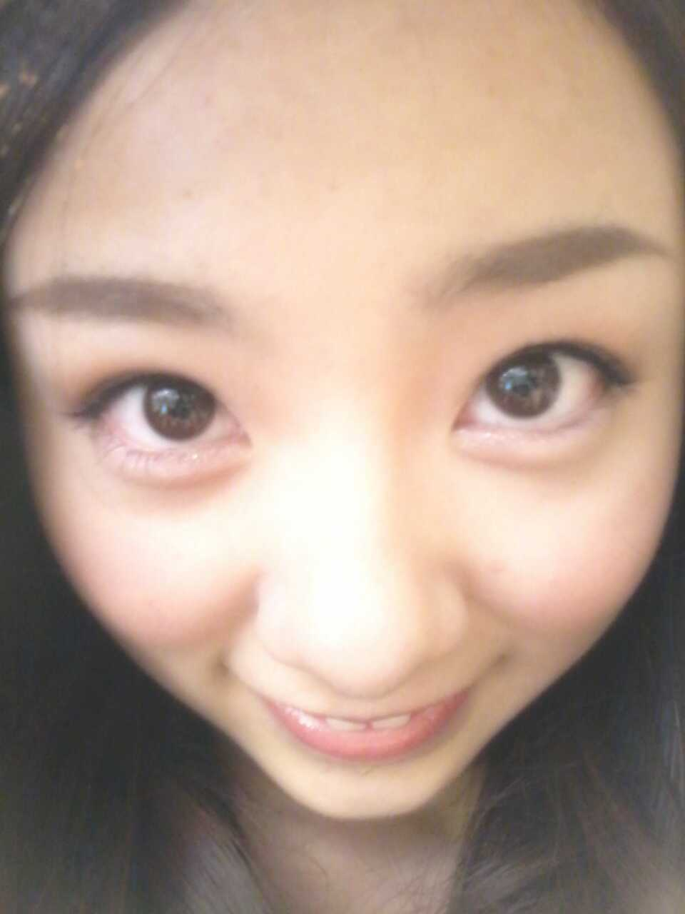
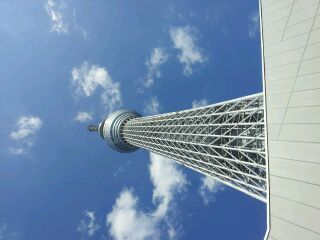
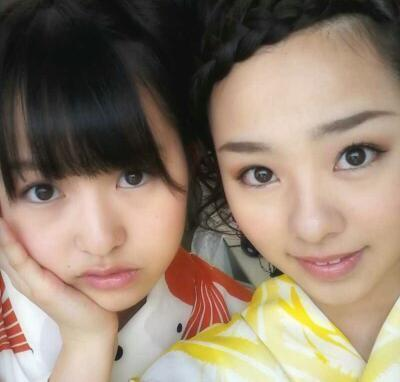

ゆきなっ☆! )))
お誕生 ほんと
おめでとうっ^^!
ゆきなは,
今 受験生で色々と
大変そうです(・ω・`)
でも うまいこと
自分でコントロールして
いつも楽しそう*^^*
すごいなあ^^
って思うっ♪
可愛いのに
変な顔ばっかして
おもろいゆきなが
大好きだよっ＼(^o^)／
ライブとなると
パワフルに一生懸命
踊る 姿も好き(*`・ω・)
これからもよろぴくねん♪
ぴくぴく。
最後に,
ろってぃーオリジナル
ドアップ写真
プレゼントするっ〃ω〃笑

嘘ぉwwwww !!!
やっぱこんなん
プレゼントしたら
あかんかっ... 笑
ゆきな 今度一緒に
写メ撮ろう*・ω・*
あっ,そーいや
8/8に友達が
大阪からきて
会えたんですw>_<
久しぶりに遊べたんです〜*^^*
いっぱい東京をあちこちして
自分もほんと
いったことない所とか
行ったから
東京を旅してるみたいな
気分だった♪
新宿に
渋谷に
新大久保に
東京に
スカイツリー行って
スカイツリー初めて
見に行った*^^*
めちゃくちゃ
高かったです★

それと
14日〜17日の4日間は
全国キャンペーンとゆうことで
まひろは
京都 滋賀 大阪 奈良
和歌山 島根
と行ってきました★☆★
乃木坂46のニューシングル
『走れ!Bicycle』のPRをするめに
ラジオやTV 取材など
たくさんのメディアに
出させて頂きました^^!
喋って喋って喋っての
4日間だったので
すごく勉強になりました。
本当楽しかったです♪
昨日はね
乃木どこの収録*^^*
内容はお楽しみに・_・*☆キラーン
とゆうことで
まったね〜ん(^ー^)ノシ
